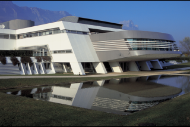

Soutenance de
thèse
Apprentissage
Bayésien : Fondations, Méthode et Applications.
Lieu :
Amphithéâtre principal
INRIA Grenoble - Rhône-Alpes
Inovallée - 655 avenue de l'Europe
Montbonnot - 38 334 Saint Ismier Cedex France
Téléphone : 04 76 61 52 00
Venir à
l'inria

Date :
Mardi 18 décembre 2007
14h00
Manuscrit :
Résumé :
Vous lancez cinq fois une pièce de monnaie et, surprise, vous obtenez
cinq « Piles ». Que ce passera-t-il au sixième lancé ? En amateur de
casino vous pourriez vous dire que « pour se rattraper » la pièce fera
certainement un « Face ». Ou peut-être que vous avez un peu étudié la
théorie des probabilités et, comme les lancés sont indépendants, vous
concluez qu'il y a une chance sur deux de refaire « Pile ». Mais
n'est-il pas étonnant qu'une pièce donne cinq fois de suite la même
chose ? Ne serait elle pas truquée ? Elle pourrait par exemple avoir
deux cotés « Pile ». A priori, vous pensiez que la pièce était
équilibrée, mais ces données étonnantes devraient vous faire changer
d'avis.
L'inférence bayésienne est une méthode permettant de
répondre rigoureusement à ce genre de problèmes. Pour cela, elle
utilise la notion de probabilité, non pas comme une limite de
fréquences objectives, mais pour modéliser les degrés de croyance
subjectifs d'un agent.
Notre travail de thèse présente cette
méthode, ses fondations philosophiques et plusieurs applications
innovantes. Dans ce cadre, nous étudions plus particulièrement la
notion d'apprentissage.
Dans un premier temps, nous nous
intéressons à l'apprentissage de paramètres, comme par exemple le biais
d'une pièce. Nous proposons une méthode bayésienne pour classer les
joueurs d'échecs qui améliore sensiblement le système ELO actuellement
employé. Le classement produit permet d’étudier des questions
intéressantes comme celle de savoir qui fut le meilleur joueur de tous
les temps. Nous étudions aussi un système de filtrage collaboratif dont
le but est de prévoir les goûts cinématographiques d'utilisateurs en
fonction de leurs préférences passées.
La deuxième partie de
notre travail concerne l'apprentissage de modèles. D'abord nous nous
intéressons à la sélection de variables pertinentes dans le cadre d'une
application robotique. D'un point de vue cognitif, cette sélection
permet au robot de transférer ses connaissances d'un domaine
sensorimoteur vers un autre. Finalement, nous proposons une méthode
permettant de créer automatiquement de nouvelles variables cachées,
afin de mieux modéliser l'environnement d'un robot.
Remarque :
lors de la soutenance, nous ne décrirons que le classement des joueurs
d’échecs et la création de nouvelles variables.
Jury :
Président:
Dr. Augustin Lux (Professeur de l'INPG, Grenoble)
Rapporteurs :
Dr. Roderick Edwards (Associate Professor, University of Victoria, Canada)
Dr. Philippe Leray (Professeur de l’Ecole Polytechnique Universitaire de Nantes)
Examinateur:
Dr. Guillaume Bouchard (Chercheur, Xerox Research Centre Europe)
Directeur de Thèse :
Dr. Pierre Bessière (Directeur de Recherche INRIA, Grenoble)
En images :
Chapitre 1 : Méthode bayésienne
Chapitre 3 : Classement de joueurs d'échecs
Chapitre 4 : Compétition Netflix
Chapitre 5 : Sélection de capteurs
Chapitre 6 : Création de variable
{kind=link}